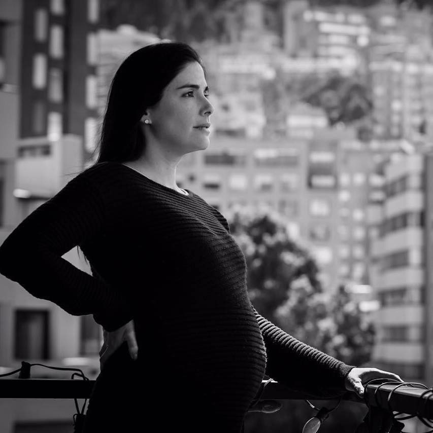
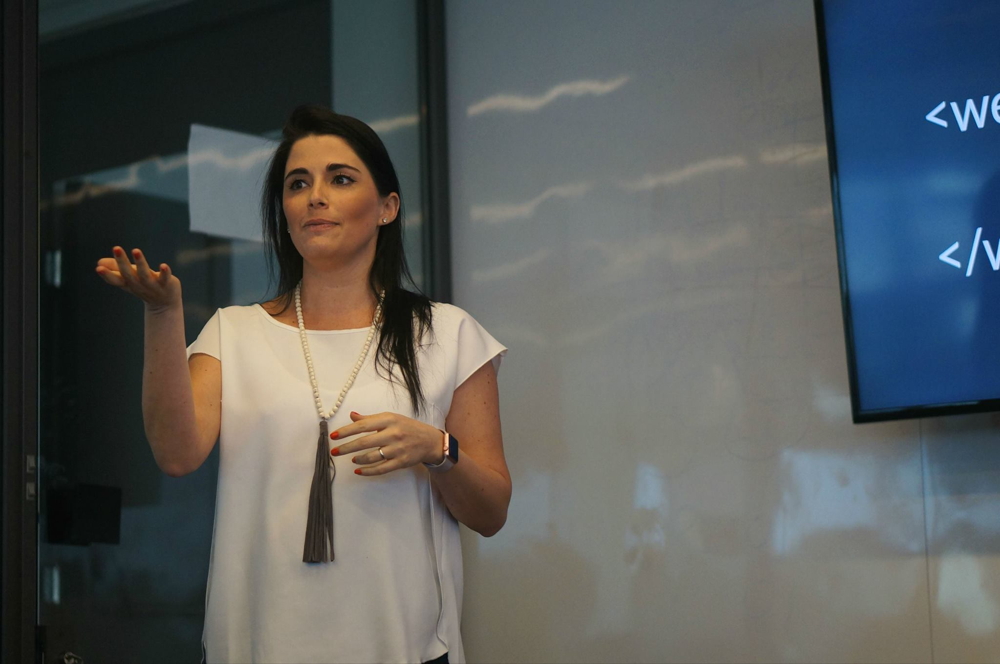
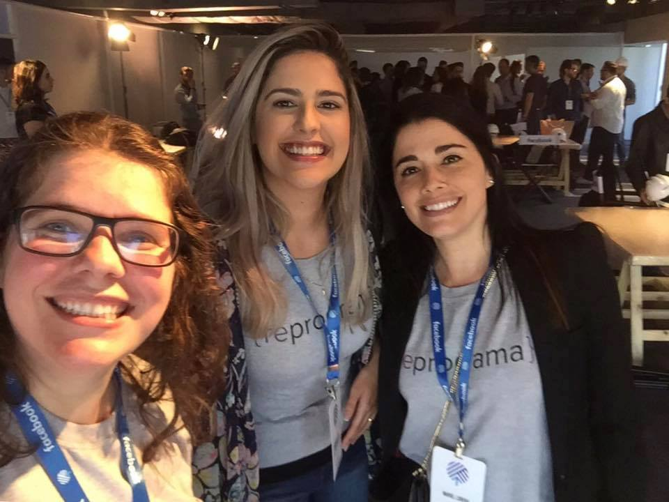
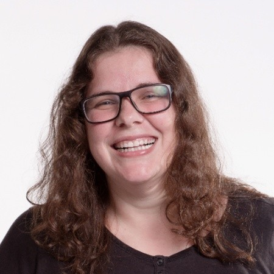
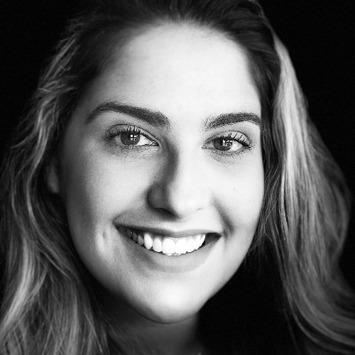
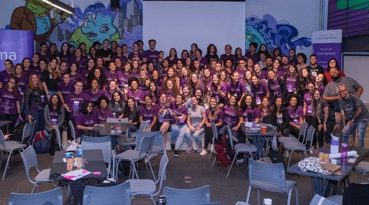

"I believe in the power of technology as a social transformation tool."
Mariel Reyes Milk
Fundadora e CEO da {reprograma}, empreendedora social e mãe de primeira viagem!

Sua História
Mariel tem em seu currículo um bacharelado em Ciências Econômicas pela Universidade de Santa Clara, na Califórnia, onde foi co-fundadora da Associação de Estudantes Latinos de Negócios e um mestrado em Environment and Development na The London School of Economics and Political Science.
Após trabalhar em outros países como o Perú, a Colombia e o Vietnam, Mariel veio pousar em São Paulo, onde trabalhou por mais de oito anos no IFC, instituição membro do Grupo Banco Mundial. Durante seu tempo lá, Mariel começou a se sentir inconformada com a dificuldade de encontrar boas procuradoras no Brasil, foi então que começou a nascer a idéia da {reprograma}.

Em meados de 2015, ao perceber a dificuldade e o desafio de achar programadores no mercado de trabalho brasileiro, principalmente mulheres programadoras, Mariel começou a conversar com pessoas e empresas do setor de tecnologia pra descobrir o que o mercado queria e como ela poderia ajudar. Foi então que começava a surgir os primeiros esboços da {reprograma}.
Em 2016 o primeiro curso piloto do programa surgiu, 25 mulheres aprenderam a programar com foco em front-end. O projeto foi tocado por um time de 20 voluntários, entre professores, desenvolvedores de conteúdo e monitores, além dos parceiros que emprestaram espaço, computadores e até mesmo mentorias. E foi assim que Mariel conheceu as outras duas co-fundadoras da {reprograma}, Carla de Bona e Fernanda Faria.

Hoje, a {reprograma} está na sua 7 turma do bootcamp front-end integral presencial, na primeira turma noturna do bootcamp de back-end e na primeira turma online do bootcamp de front-end!
×
Carla de Bona
Designer UI/UX diva e também uma das co-fundadoras da {reprograma}. Palestrante e consultora sobre UX/UI, tem mais de 12 anos de experiência na área. Visite o site dela para saber mais!
Fernanda Faria
Empreendedora Social e Comunicações são o foco da outra co-fundadora da {reprograma}. É Comunicóloga, e também passou pelas graduações de Psicologia e Jornalismo. Conheça um pouco mais da Fernanda!
